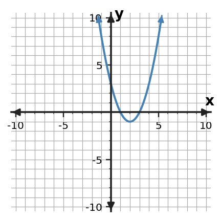

Algebra 1 · Unit 4 · Section 4.5 · Investigation
Quadratic Feature Translator
Polynomial Structure and Quadratic Graphs
Learning Target: Students will connect polynomial expressions to quadratic graphs and key features.
Directions
- Work with a partner unless your teacher assigns a different grouping.
- Show the evidence you use, not only the final answer.
- When a representation changes, keep the meaning of the quantities attached to your work.
- Revise an answer if later evidence shows that your first claim was incomplete.
Part 1 · Read the Graph

| Feature | Value / description |
|---|---|
| Vertex | |
| Axis of symmetry | |
| x-intercepts | |
| y-intercept | |
| Opening direction |
Part 2 · Match Structure to Feature
The same quadratic can be written as $y=(x-1)(x-3)$ and $y=(x-2)^2-1$.
| Question | Which form is more useful? | Why? |
|---|---|---|
| Find the zeros | ||
| Find the vertex | ||
| Find the axis of symmetry |
Part 3 · Claim Audit
A student claims the axis of symmetry is $x=1$ because one factor is $(x-1)$. Use the two zeros to critique the claim.
Synthesis
Explain why equivalent expressions can reveal different graph features without changing the graph itself.